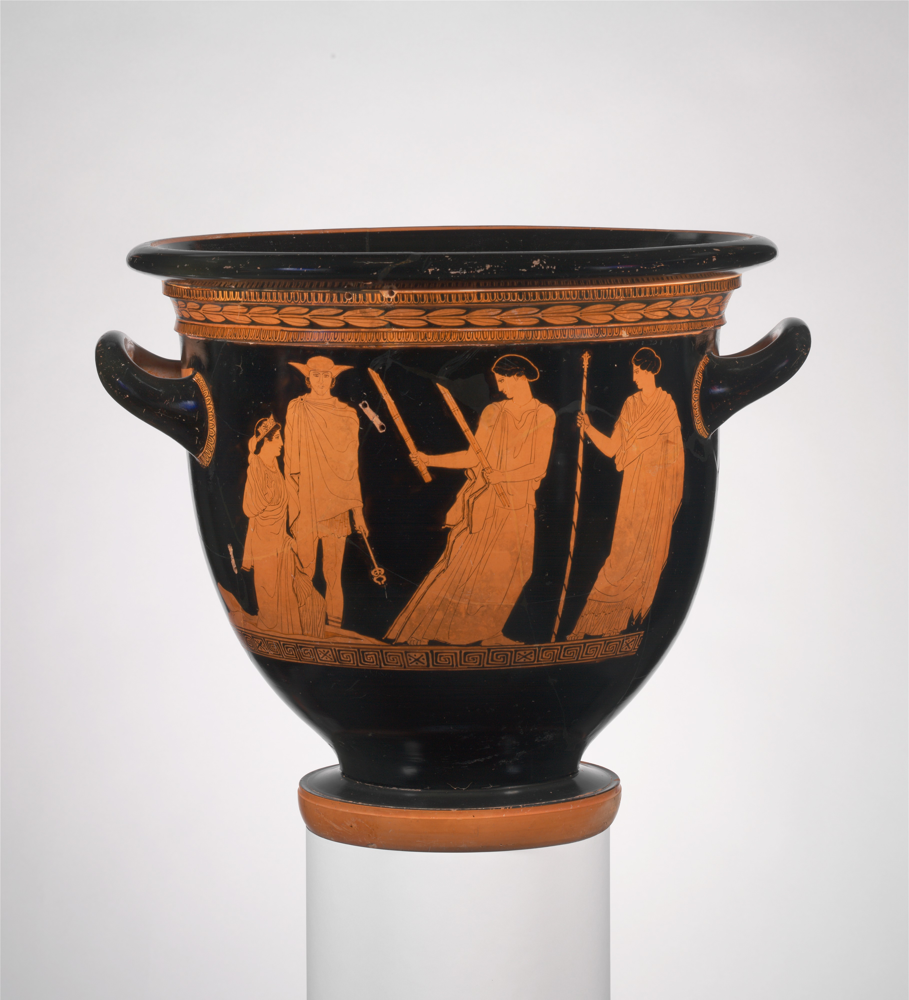
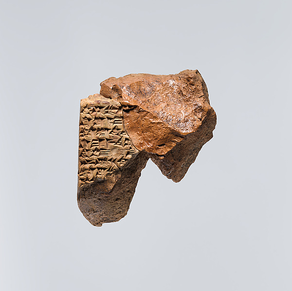
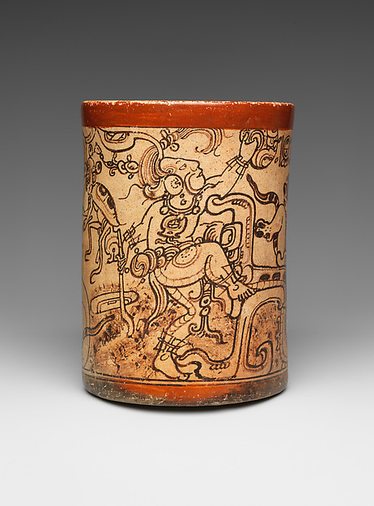
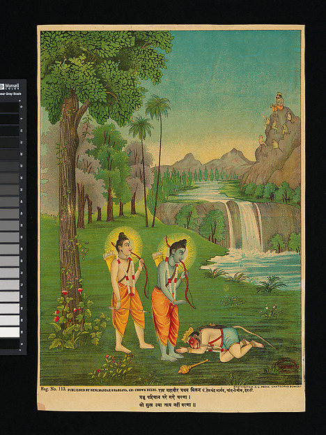
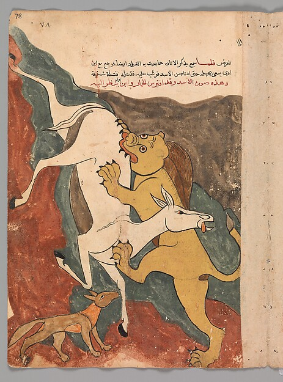

The Role of Myth
Myth in Human History
Human history is beautifully complex, shaped by migration, cultural exchange, shared ancestry, and the environments in which societies develop. Myths preserve this complexity by revealing how societies made sense of themselves and the world around them. These stories offer a rare window into intangible cultural heritage, carrying the values, memories, and ways of understanding that formal historical records often overlook. To study myths, therefore, is to trace the deeper history of human thought and the evolving relationship between people, their communities, and their surroundings.
These ways of understanding become visible in the stories themselves. In one ancient Greek tradition, the seasonal decline and renewal of vegetation took narrative form in Demeter’s grief during Persephone’s absence and the earth’s revival upon her return. A Korean eclipse tale interpreted the sudden darkening of the sun or moon through the Bulgae, fire dogs from a realm of darkness whose attempts to seize the celestial bodies temporarily obscured their light. In many Māori creation traditions, the emergence of the natural world belongs within a genealogy: when Tāne separated Ranginui, the sky father, from Papatūānuku, the earth mother, light entered the world, and their descendants became associated with its forests, seas, and other natural domains. Taken together, these examples show how myth can make the cosmos socially meaningful, connecting environmental cycles and celestial events to human experiences of kinship, separation, struggle, and renewal.

These examples demonstrate that myths are not isolated explanations of the world, but cultural records continually shaped as people migrate, encounter other communities, and adapt inherited stories to new environments. Similarities among traditions may preserve traces of shared ancestry or historical exchange, while their differences reveal how societies reinterpret common ideas through distinct cultural experiences. This tension between continuity and transformation has made myth an important subject of historical and anthropological comparison. Previous research has therefore examined how geography, language, and cultural contact influence the distribution of stories—and how these overlapping forces complicate efforts to reconstruct their origins and relationships.
Because myths carry a community’s memory, preserving them is also an act of preserving culture. Yet oral traditions endure only when they are remembered, retold, recorded, or collected. As generations change and languages, rituals, and social settings transform, stories may be reshaped, fragmented, or lost altogether. Archives and catalogues therefore serve as bridges between living cultural memory and historical study, allowing traces of traditions to survive beyond the people and moments that produced them.
“Folklore is the boiled-down juice of human living.”
Preservation and cataloguing
Preservation, however, is never a neutral or complete process.
Every surviving tablet, vessel, printed image, or transcription reflects a sequence of choices about what was recorded, copied, collected, translated, classified, and retained.
Although each medium transmits part of a narrative across time, none can fully reproduce the social world in which it once circulated—the performance, audience, ritual setting, relationships, and cultural authority that gave it meaning. Catalogues extend this process by making recurrence visible across collections too vast for any single reader to comprehend, but they do so by reducing complex traditions into retrievable categories. They therefore preserve not living cultures in their entirety, but mediated traces of cultural memory whose value depends upon careful interpretation of both what they contain and what they leave outside their frame.



These objects are historical counterpoints, not samples from the 926 catalogue records, representatives of analytical groups, or stages in a single civilizational sequence. They show what a motif matrix necessarily leaves outside its frame: material, genre, audience, use, and authority.
History of Catalogues
History of Cataloging Global Mythology
These objects show how stories can survive long after the moments in which they were first told. But preserving a narrative is only the first step.
As collections grew across languages, regions, and historical periods, scholars also needed a way to bring scattered stories into relation with one another and to recognize when similar plots or narrative elements appeared in different traditions. Cataloguing developed in response to that need. By organizing stories into recurring tale types and motifs, scholars made large bodies of folklore searchable and comparable. Over time, these systems moved from classifying whole plots to indexing smaller narrative elements and, eventually, mapping their distribution through digital databases. Each stage expanded what researchers could study, while also shaping the particular forms of similarity that became visible.
-
Tale types become classifiable
Antti Aarne formalizes recurring plots
Aarne’s Verzeichnis der Märchentypen assigned stable numbers to recurring plots, giving scholars a shared comparative language. Its evidence base remained largely European.
-
1928 and 1961
The tale-type system expands
Stith Thompson internationalizes Aarne’s index
Thompson expanded Aarne’s catalogue in 1928 and revised it in 1961, broadening its bibliography and geographic reach while retaining the tale-type framework.
-
1932–1958
Motifs become searchable
Thompson indexes smaller narrative elements
Thompson’s six-volume Motif-Index (1932–36; revised 1955–58) made smaller elements—such as earth-divers, stolen fire, and supernatural birth—traceable across different stories.
-
Cataloguing becomes globally analytical
Yuri Berezkin develops a tradition-by-motif database
Berezkin computerized the catalogue in 1993, began statistical analysis the next year, and expanded it across the Americas and Old World. Its tradition-by-motif matrix supports research on geographic distribution and historical contact.
03 The problem of representation
Every catalogue carries a point of view, and that point of view has consequences.
To classify is to choose a name, a unit, a language, and a boundary. Those choices make comparison possible in the first place; they also decide, in advance, which parts of a narrative will remain visible to everyone who comes later.
A catalogue record is not a transparent window onto an encounter. Names, captions, translations, and metadata frame what a later reader is able to retrieve and, just as importantly, what that reader believes they are seeing. Metadata does not simply label evidence; it interprets it. A motif title performs a comparable reduction, because it cannot carry tone, gesture, audience, disagreement, sacred restriction, or a teller’s reason for speaking, and because the editorial language of the catalogue—its choices of English wording—enters the record alongside the narrative it describes. What becomes searchable is genuinely valuable, but it is never identical to the source narrative or to the occasion of its performance.
“Each standard and each category valorizes some point of view and silences another.”
This is why a single technical detail of the dataset carries so much interpretive weight. A blank cell in the matrix means only that a given motif was not recorded in this frozen export; it does not prove that a community lacks the narrative, and uneven documentation must never be read as evidence that one tradition is richer, more complex, or more imaginative than another. The networks built in this study organise records within an archive; they do not classify cultures, and a motif remains a trace rather than the story itself.
Far from being a reason to abandon comparison, these limits sharpen the question the research is designed to answer. If representation shapes what we see, then the honest question is not “what is the true shape of world mythology?” but something more testable: which patterns survive when the meaning of similarity itself is changed?
04 Current Works and Gaps in Research
Computational Folkloristics

Comparative mythology has increasingly moved beyond the close reading of individual stories toward the quantitative study of narratives across cultures. Ross, Greenhill, and Atkinson analyzed 700 variants of a European folktale and found that both geographic distance and ethnolinguistic affiliation independently shaped narrative variation, demonstrating that stories bear traces of where communities lived and with whom they shared cultural histories. Da Silva and Tehrani later applied phylogenetic methods to Indo-European folktales, finding that several traditions corresponded more strongly with linguistic ancestry than spatial proximity, suggesting long-term inheritance across generations. At a global scale, Thuillard and colleagues found strong geographic patterning in the Berezkin catalogue, while showing that lateral cultural transmission makes a single line-of-descent model inadequate for the whole dataset. Together, these studies establish myth as a valuable record of cultural transmission, but leave unresolved how inherited motifs, broader thematic meanings, geography, language, environment, and historical contact interact to produce the global structure of mythology.
Large-scale comparative research requires myths to be translated into a form that can be systematically analyzed across cultures. Motif catalogues make this possible by reducing complex narratives into recurring elements—such as the theft of fire, the emergence of land from water, or a journey between worlds—and recording where each element appears. This framework has enabled scholars to compare large collections of records and identify broad patterns associated with geography, population history, and cultural transmission. The frozen Berezkin Catalogue export analyzed here records 2,138 motif IDs across 926 heterogeneous catalogue records, providing an unusually extensive foundation for global analysis.
Yet motif codes also define cultural similarity within relatively rigid categorical boundaries. Two traditions are treated as related when they share an identical catalogued motif, but not necessarily when they express a similar underlying idea through different characters, events, or symbols. One tradition might explain human mortality through a broken prohibition, while another describes a failed attempt at resurrection; although both confront the irreversibility of death, they may share no formal motif code. The absence of direct overlap, therefore, does not necessarily indicate the absence of a deeper conceptual relationship.
This distinction creates an important methodological limitation. A motif-based network measures documented categorical overlap, but it cannot fully represent the broader meanings connecting stories across cultural forms. Its structure may reflect not only historical transmission, but also decisions about how motifs were defined, translated, separated, or grouped within the catalogue. Motif analysis remains especially valuable for tracing the distribution of specific narrative elements, yet it may overlook relationships preserved at a higher level of abstraction—such as shared ideas of cosmic order, transformation, boundary crossing, sacrifice, or renewal.
Computational approaches such as topic modeling offer a potential way to recover some of these less explicit relationships by identifying recurring patterns across narrative descriptions rather than requiring exact code matches. Previous studies have applied topic models and other semantic methods to discover latent structures within folktale collections, demonstrating that computational models can complement established folkloristic classifications. However, these methods have generally been applied to individual corpora or treated separately from conventional motif analysis, leaving limited understanding of how motif-based and semantic representations organize the same global body of mythology differently.
05 · Methods at a glance
One archive, read twice, then compared.
The study holds the source archive constant, changes how resemblance is defined, and asks which patterns remain visible.
Text alternative
The Berezkin Catalogue enters two parallel workflows. The exact-motif route builds a binary incidence matrix, weights record pairs with Jaccard similarity, detects four Leiden communities, and extracts community attributes. The thematic route prepares motif text, constructs a 5,172-term TF–IDF representation, learns 15 NMF factors, builds a cosine union-k-nearest-neighbor network, and detects five Leiden communities. The comparison examines community overlap, topic prevalence in T2 and T4, precipitation, and longitude.
-
01 · Data
Hold the archive constant.
Begin with one frozen English-language export of Yuri Berezkin’s catalogue: 926 catalogue records, 2,138 motif IDs, and the recorded assignments connecting them. The same records and assignments enter both analyses.
Boundary: a blank means “not recorded in this export,” not “absent from a culture.”
-
02 · Networks
Measure resemblance two ways.
The exact-motif reading connects records that share motif IDs. The thematic reading learns fifteen provisional factors from English titles and descriptions and connects records with similar profiles. Leiden community detection then summarizes each network into record groups.
Boundary: these are groups of catalogue records—not peoples, identities, or complete traditions.
-
03 · Comparison
Ask what survives the change of lens.
Align the four exact-motif groups with the five thematic groups across the same 926 records. Test whether their agreement exceeds chance, locate the main split, and examine it alongside broad geography and documentation depth.
Boundary: the networks generate hypotheses, not proof of migration, ancestry, contact, origin, or cause.
Interpretive note: the two readings also use different graph recipes, so this compares two complete analytical pipelines; it does not isolate representation as the sole cause of every difference.
06 · The findings
One archive, two readings, and one revealing fault line.
What the study does
A resemblance is a pattern to explain, not a history already proven.
The reasoning behind the study is an old problem in the comparative study of culture. When two records resemble one another, the resemblance may reflect shared ancestry, historical contact and borrowing, the movement of people, a common environment that invites similar stories, the recurrence of concerns common to human life, or some combination that a single observation cannot untangle. Cultural records are not independent, so similarity is never self-explaining. No network of catalogue entries can resolve those histories on its own. What comparison can do is identify resemblances robust enough to deserve further explanation.
The same 926 catalogue rows and source assignments remain fixed. They are then read through two fully specified analytical pipelines. One asks whether records share the same motif IDs; the other asks whether English motif titles and descriptions yield similar thematic profiles. The graph recipes also differ: the exact-motif reading retains every positive Jaccard connection, while the thematic reading uses a sparser twelve-neighbor cosine graph. Each receives a separately selected Leiden setting appropriate to its network. The comparison therefore shows what these two complete ways of constructing resemblance hold in common and where they diverge; it cannot attribute every difference to representation alone.
Text alternative
The map displays the same 926 records using three analytical overlays: sixteen broad regions, four exact-motif groups, and five provisional thematic groups.
Two ways of measuring resemblance
The exact-motif network and the thematic network look at different scales.
The two readings are not rival guesses at one hidden truth. They are instruments trained on different levels of the same archive—one on recorded motif IDs, the other on aggregate lexical-semantic emphasis—and their value lies in comparing what each brings into focus.
In the exact-motif network, resemblance is the proportion of two records’ combined motif lists that the records share. “Primeval sky close to earth” and “Theft of fire” remain distinct catalogue elements, and records draw together only when the same motif ID was recorded in both. This reading preserves the catalogue’s distinctions; it does not recover original wording, performance, or a complete story.
In the thematic network, an unsupervised model condenses the English motif titles and glosses into fifteen recurring lexical-semantic factors, including provisional patterns labelled “Sun, Moon and eclipses,” “first people, plants and beings,” and “water, fish and aquatic beings.” Each record receives a profile across those factors, and records connect when their profiles are similar. These labels are analytical summaries, not community-authored categories, and remain candidates for human validation.
The exact-motif pipeline resolves the archive into four connected groups; the thematic pipeline resolves the same records into five. These are emphases within the frozen archive—not peoples, cultural stages, or bounded civilizations.
Text alternative
The exact-motif reading produces four connected groups. The provisional thematic reading produces five groups. Their large-scale structures overlap substantially but do not match.
What the comparison reveals
The two readings share a nonrandom but partial backbone.
The result falls neither at total agreement nor at total disagreement. Three large regions of the archive remain recognisable under both readings; one region does not survive the change of pipeline intact. Chance-corrected measures put the agreement in the substantial-but-incomplete middle: the adjusted Rand index is 0.3549 and adjusted mutual information is 0.3888. The two readings coassign 55,389 pairs of records, compared with 26,625.23 expected under fixed group sizes, producing an analytical z-Rand score of 151.11. None of 99,999 global permutations reached the observed agreement (p = 0.00001). A stricter comparison that shuffled labels within broad regions raised the expected agreement—the mean adjusted Rand index became 0.2075—but none of those permutations reached the observation either. Broad geography explains part of the backbone, not all of it.
In plain language, the two pipelines preserve some of the same structure within this frozen archive, but they do not make interchangeable classifications. Representation and graph construction matter, yet they do not dissolve everything the two readings hold in common.
The fault line, read closely
One exact-motif group divides principally toward sky and world-order, or first beings and land.
The main disagreement is concentrated in the largest exact-motif group, B1, which contains 363 records. Under the thematic reading, 162 of those records enter T2 and 148 enter T4; the remaining 53 disperse among T1, T3, and T5. This is a principal two-branch division, not a clean transformation of one group into two equal halves. The primeval-water and earth-diver concentration belongs principally to a different correspondence, B4–T1, and should not be used to define B1.
The strongest contrast is thematic. Within B1, records entering T2 show greater relative emphasis on “Sun, Moon and eclipses” and “sky, earth and world structure.” Records entering T4 show greater emphasis on “first people, plants and beings” and “trees, rocks and climbing.” Four factor differences remain after labels are shuffled within broad-region and motif-count strata. Because these factors helped form the thematic groups, they characterise the split rather than independently validate it. They are contrasts in catalogue language, not evidence for “celestial peoples” and “terrestrial peoples.”
Geography sharpens the pattern and disciplines its interpretation. Ninety of the 148 B1 records entering T4 are located in the catalogue’s combined macroarea of Amazonia and Northern South America, while the B1 records entering T2 are distributed across several macroareas. Documentation differs as well: B1∩T2 averages 35.3 recorded motifs per record, compared with 61.1 for B1∩T4. Geography, documentation depth, and thematic pattern therefore remain entangled.
The individual motif results show why that caution matters. An initial comparison produced 232 differences; controlling for broad geography reduced the list to eight, and jointly accounting for region and documentation reduced it to zero. The aggregate thematic contrast is more robust than any catalogue-level motif claim. The networks generate hypotheses that can guide historical, linguistic, archaeological, ecological, ethnographic, and community-grounded research. They do not prove migration, borrowing, common ancestry, environmental cause, direction of transmission, or an original homeland.
What it means for scholarship
Representation and graph construction are part of the finding.
The central lesson is methodological, and it can extend beyond mythology. How a cultural archive is represented is not a neutral step completed before analysis begins; together with the graph recipe, it partly determines what the analysis can count as similarity. A paired design makes that claim testable rather than merely cautionary. It reveals both cross-pipeline structure and pipeline-dependent local organisation.
Substantial agreement does not make two classifications interchangeable. The places where careful measures agree in the aggregate while diverging in detail are exactly the places worth studying. The exact-motif and thematic readings are best understood as observations at two different levels of one cultural record: the catalogue’s recorded distinctions and the aggregate preoccupations inferred from its English descriptions. Neither is the culture itself.
Framed this way, the study offers a small model for responsible computational comparison in the humanities. It tests which cultural structures are stable across two specified pipelines; demonstrates that community agreement can be substantial without being interchangeable; distinguishes robust aggregate contrasts from context-sensitive individual motif results; and insists that geography and documentation depth be audited before historical claims are entertained. Its strongest conclusion is not that one method is superior. It is that a study that never questions its representation cannot know how much its conclusions depend on that choice.
Explore further: theme contrasts, geographic composition, group profiles, climate context, and latitude distributions.
07 · What it means for society
Similarity without sameness. Difference without isolation.
Myths do not simply describe nature; they make a relationship with it thinkable. They turn sky and water, birth and death, animals and kin, danger and obligation into forms people can remember, perform, debate, and pass on.
The first is homogenisation, which turns culturally distinct narratives into interchangeable versions of a single universal story. It notices recurrence but forgets that meaning is carried through particular languages, landscapes, histories, relationships, and systems of knowledge. The second is fragmentation, which treats every tradition as sealed from every other and makes recurring human questions impossible to recognise. It defends difference by denying relationship.
The two readings, held together, keep both truths in view. Exact motif IDs protect the grain of recorded specificity. The thematic network can surface candidate echoes that exact labels would hide, pending human review. The study’s most durable offering is therefore not a finished map of world mythology but a way of asking which patterns remain stable, which depend on the lens, and what each representation leaves outside its frame.
That question is not confined to scholarship. Archives, search systems, classrooms, and automated systems all make decisions about what counts as “the same.” This study did not measure present-day technologies, so the implication is methodological: a system that collapses related material too eagerly can flatten distinct bodies of knowledge into generic content, while a system that recognises only exact wording can conceal meaningful relationships.
Responsible comparison should name its lens, preserve provenance and uncertainty, and return questions of meaning and authority to the communities whose knowledge is being represented. Computational patterns can point independent inquiry toward the places most worth examining. They cannot replace that inquiry, and they should never be mistaken for its conclusion.
People make worlds by living in them and again by telling them. A catalogue makes a third world: a world of comparable traces. That world can reveal patterns no single reader could hold in mind—but it must never be mistaken for the lives from which it was made.